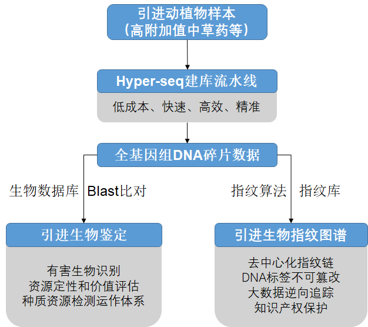
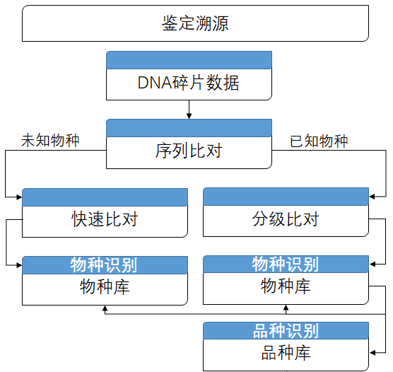
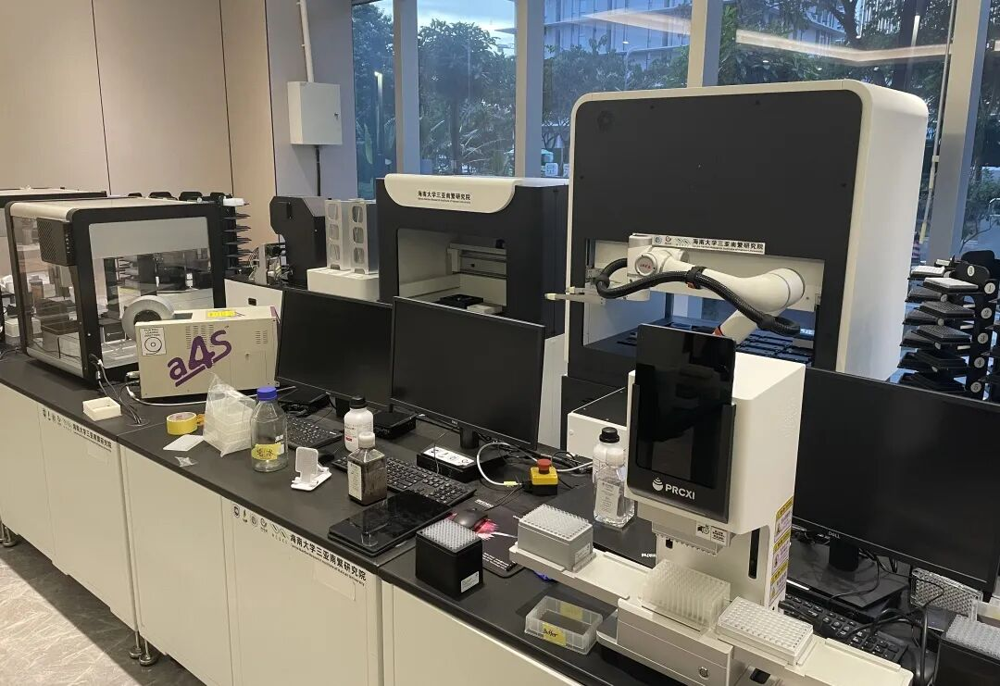

Hyper-seq：新型灵活的标记辅助选择与基因分型方法
2022Hyper-seq 核心方法学论文，系统定义技术原理、建库策略与在分子育种中的应用潜力。
查看论文 →学术成果、案例精选、视频教程
Hyper-seq 核心方法学论文，系统定义技术原理、建库策略与在分子育种中的应用潜力。
查看论文 →
利用 Hyper-seq 等技术构建木薯泛基因组和单倍型图谱，解析栽培种及野生祖先的适应性进化。
查看论文 →.png)
应用 Hyper-seq 技术解析高杂合同源四倍体马铃薯基因组，为复杂倍性作物研究提供重要参考。
查看论文 →
构建象草染色体水平基因组，探索异源四倍体物种形成及高生物量积累机制。
查看论文 →
基于 Hyper-seq 开展基因分型和全基因组关联分析，定位茶叶风味相关代谢物分子标记。
查看论文 →
比较三种药用甘草属植物基因组，揭示重要活性成分生产相关候选基因。
查看论文 →构建 Michelia alba 高质量单倍型基因组，揭示甲基化模式与花性状差异。
查看论文 →
构建百香果染色体水平基因组，解析物种进化与风味合成相关机制。
查看论文 →
智能自动化方案联合 Hyper-seq，支撑水稻与大豆基因组选择研究，提升育种数据采集效率。
查看原文 →
围绕 Hyper-seq 的一步 PCR、低成本建库和灵活标记密度调控，解读其在标记辅助选择中的潜力。
查看推文 →
聚焦木薯栽培种及野生祖先的泛基因组资源，呈现 Hyper-seq 在大规模基因型数据构建中的应用。
查看推文 →
解读高杂合同源四倍体马铃薯基因组解析工作，以及 Hyper-seq 对复杂倍性作物研究的支撑价值。
查看推文 →梳理象草异源四倍体物种形成和高生物量积累研究，展示基因组技术在能源草育种中的价值。
查看推文 →展示 Hyper-seq 在低成本、高通量基因分型和大数据育种中的应用价值。
呈现海南大学南繁科研与育种创新基础，呼应海古纪在南繁场景下的技术服务布局。
当前标签下未检索到匹配结果，请调整关键词或筛选范围。